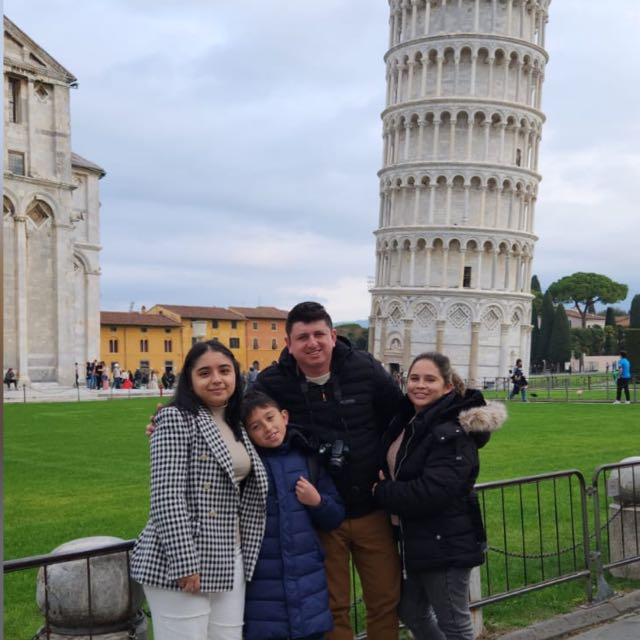

Nosotros
Soy Juan Carlos Jimenez Vargas, desarrollador de software especialmente en desarrollo Backend, estudiante de Ingeniería de Sistemas en la UNAD, soy casado y tengo dos hermosos hijos Nicoll y Santiago, me gusta el Mountain Bike y usualmente voy a recorrer diferentes rutas con algunos compañeros, amo compartir tiempo con mi familia ya sea en casa o departiendo en un restaurante.
